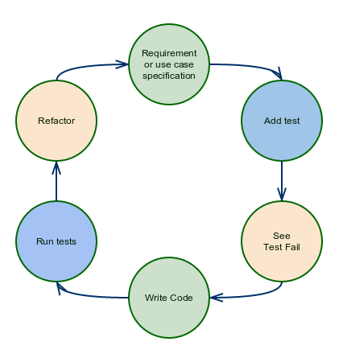

TDD && BDD
Javascript y el buen sabor de las pruebas
Creado por Oscar Andrés Granada Baquero / @oagranada
Historia
- 1956-1982: Pruebas basadas en depuración.
- 1983-1987: Pruebas humanas realizadas a lo largo de todo el ciclo de vida del S.W.
- 1988-2005: Pruebas orientadas a la prevención de fallos, inicio de pruebas automatizadas.
- 2006-2014: TDD, BDD, metodologias orientadas a pruebas.
TDD?
Test Driven Development (Desarrollo orientado a pruebas)
¿Que es?
Es una metodologia de desarrollo de software en la cual antes de escribir el programa en cuestión se escriben las pruebas que permiten verificar el correcto funcionamiento del programa que se va a crear.
Criclo de vida de TDD
TDD es llevado a cabo mediante 5 pasos:

BDD?
Behavioral Driven Development (Desarrollo orientado al comportamiento)
¿Que es?
Es una metodologia de desarrollo de software en la cual antes de escribir el programa en cuestión se escriben las pruebas que
permiten verificar el correcto funcionamiento del programa que se va a crear. Éstas pruebas están ordenadas de manera gerarquica
para entender el por que de cada una de las pruebas, y así trabajar con respecto a los casos de uso e historias de usuario.
BDD elimina los problemas de TDD (Falta de expresividad de las pruebas, convenciones).
Criclo de vida de BDD
BDD es llevado a cabo mediante 6 pasos:

Ejemplo
- Navegador web
- Node.js
- Mocha
- Chai
var assert = require("assert")
describe('Pruebas', function(){
describe('Factorial()', function(){
it('Debe retornar 1 si el valor de entrada es menor o igual a 0', function(){
assert.equal(1, factorial(5));
})
})
})
Pruebas
Factorial()
1) Debe retornar 1 si el valor de entrada es menor o igual a 0
0 passing (8ms)
1 failing
1) Pruebas Factorial() Debe retornar 1 si el valor de entrada es menor o igual a 0
ReferenceError: factorial is not defined
var factorial = require("./funciones.js").factorial;
var assert = require("assert")
describe('Pruebas', function(){
describe('Factorial()', function(){
it('Debe retornar 1 si el valor de entrada es menor o igual a 0', function(){
assert.equal(1, factorial(5));
})
})
})
Pruebas
Factorial()
1) Debe retornar 1 si el valor de entrada es menor o igual a 0
0 passing (8ms)
1 failing
1) Pruebas Factorial() Debe retornar 1 si el valor de entrada es menor o igual a 0
AssertionError: 1 == "undefined"
Entonces se hace así hasta que se termina el resultado deseado.
var factorial = require("./funciones.js").factorial;
var assert = require("assert")
describe('Pruebas', function(){
describe('Factorial()', function(){
it('Debe retornar 1 si el valor de entrada es menor o igual a 0', function(){
assert.equal(1, factorial(1));
});
it('Debe retornar el resultado de una multiplicación sucesiva', function(){
assert.equal(120, factorial(5));
});
})
})
function factorial(x) {
if(x<=0)
return 1;
else
return x*factorial(x-1);
}
module.exports = {
"factorial": factorial
}
BDD
var chai = require('chai');
var expect = chai.expect;
var factorial = require("./funciones.js").factorial;
describe('Pruebas', function(){
describe('Factorial()', function(){
it('Debe retornar 1 si el valor de entrada es menor o igual a 0', function(){
expect(factorial(1)).to.be.equal(1);
});
it('Debe retornar el resultado de una multiplicación sucesiva', function(){
expect(factorial(5)).to.be.equal(120);
});
})
})